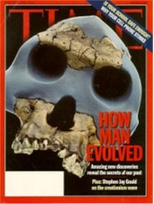
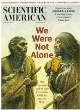
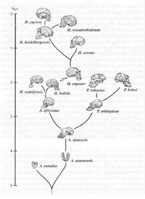
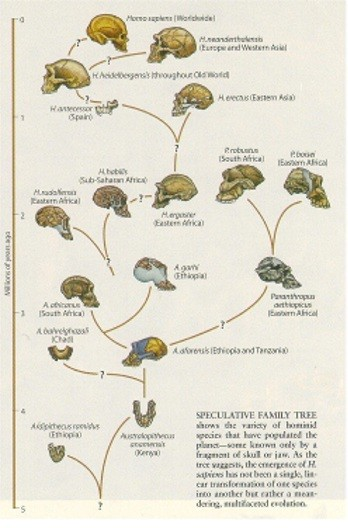
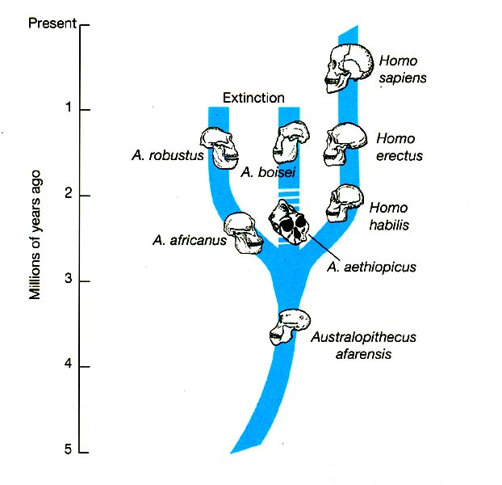
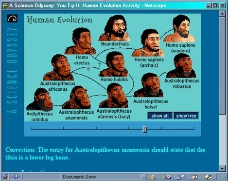

Human Evolution
 |
Human evolution has been in the news a lot recently. There was a cover story in Time magazine last August that was obviously a reaction to the Kansas school board decision because it included an attack on Kansas creationists by Stephen Jay Gould. Now the story is on the cover of this month's issue of Scientific American.
|
 |
Ian Tattersall is the very well-known evolutionist who wrote the Scientific American article. You perhaps read our essay, "The Fossil Trail Fizzles Out" in August of 1997, in which we reviewed his book, The Fossil Trail. He certainly isn't a creationist, but you wouldn't guess that from his introduction to his cover story, in which he says,
|
... during the 1950s and 1960s a school of thought emerged that, in essence, claimed that only one species of hominid could have existed at a time because there was simply no ecological space on the planet for more than one culture-bearing species. The "single-species hypothesis" was never very convincing--even in terms of the rather sparse hominid fossil record of 35 years ago. But the implicit scenario of the slow, single-minded transformation of the bent and benighted ancestral hominid into the graceful and gifted modern H. sapiens proved powerfully seductive--as fables of frogs becoming princes always are.
1
|
Wow! It is one thing to say that the evolutionary fable was once convincing, but now new evidence has shown it to be wrong. But he says it wasn't even convincing in the first place, despite the fact that it was taught as undeniable fact at the time.
At the risk of spoiling the ending, we will tell you right now that this is all a result of contradictory fossil discoveries, radioactive dating, and DNA analysis. Consequently, they have to make major revisions to their theories to try to make everything fit. The new theories have trouble reconciling themselves with the data, too. But before we look at that, let's make the following simple point.
Truth Never Changes
A lot has changed in the last 35 years or so, especially in the electronics industry. Let's compare the changes in evolutionary theory with the changes in electrical engineering theory over that period.
I still have my electronic circuit design textbooks that I used in college in the late 1960's. If I had to teach the same electronic circuit design course today that I did back then, I could do it. Granted, I would have to add some supplemental material about integrated circuits. I would get the time for those added lectures by rushing through the chapters on vacuum tubes. But the information on vacuum tubes isn't wrong--it is just less relevant today than it was back then.
In fact, nothing in any of my engineering textbooks is wrong. What was true 30 years ago is still true today. Ohm's law is still true. All the stability criteria for linear systems is still true today. New engineering textbooks don't contradict old ones. New engineering textbooks just contain more information about new technology.
That's because engineering textbooks contain information determined using the scientific method. The relationship between the current flow in the base of a transistor and current flow in the collector of a transmitter was studied and verified using countless experiments that gave consistent results. The results of those experiments were formulated into expressions of fundamental truths. The characteristics of current flow in a transistor weren't simply the philosophical opinions of a world-renowned teacher.
Imagine an evolutionist trying to teach a course in evolution using textbooks from the 60s. He would have to tell the students, "Tear out pages 15 through 27 of your textbook because they are all wrong." "Cross out the third sentence on the second paragraph of page 32." By the time he was done with the course, there would not be much left of the textbook.
That's because many of the "facts" found in the evolutionary textbooks of yesteryear aren't true any more. Since truth doesn't change, that means those things weren't true back then, either. Forty years from now evolutionists will tell us that the things in today's evolutionary textbooks aren't true either.
Unlike engineering textbooks, the evolutionary textbooks don't contain information determined by the scientific method. They contain opinions and inferences of scientists. Those inferences and opinions are greatly affected by the scientists' prejudices and desires. Those are strong accusations, so let us back them up.
Just last August, Time magazine told us,
|
What occurred some 200,000 years later, when Homo sapiens met their Neanderthal cousins--the only other hominid species that hadn't dwindled into extinction--is a matter of much speculation, scientific and otherwise.
2
|
Tattersall whines that prejudice, in the form of "the dead hand of linear thinking", keeps his colleagues from fully endorsing his explanation of how many human races existed side by side for many years. In his words,
|
The picture of hominid evolution just sketched is a far cry from the "Australopithecus africanus begat Homo erectus begat Homo sapiens" scenario that prevailed 40 years ago--and it is, of course, based to a great extent on fossils that have been discovered since that time. Yet the dead hand of linear thinking still lies heavily on paleoanthropology, and even today many of my colleagues would argue that this scenario overestimates diversity.
3
|
We guarantee you will never see any science or electronics magazine run a story with the headline, "Electrons Might Not Have a Negative Charge After All!" That won't happen because, new truths about the electrical properties of materials are being discovered every year, but none of the new discoveries contradict the old ones. That's because the scientific method is a reliable way to discover truth. Truth never changes. We just discover more of it.
Evolutionary "truth", on the other hand, is based on philosophy rather than science. That's why it changes all the time. It is merely a reflection of the attitudes of whoever holds the greatest position of intellectual power. That's why our collection of human evolution stories contains magazine clippings with headings like these:
|
Redrawing Our Family Tree?
4
|
|
Hominid Brain Evolution: Looks Can Be Deceiving
5
|
|
High-tech Images Shrink Fossil Braincase Current theories about brain evolution in humans and prehistoric hominids may need revision
6
|
|
Unearthed Skull Suggests Human Features Began Developing Earlier
7
|
|
New Study Points to Eurasian Ape as Great Ape Ancestor
8
|
|
For Humans, Evolution Ain't What It Used to Be
9
|
|
Not So Extinct After All The primitive Homo erectus may have survived long enough to coexist with modern humans
10
|
|
Redrawing the Human Line
11
|
Those are just some of the clippings from our human evolution file because that's what we are writing about this month. We could do the same with clippings from our cosmic evolution file, our historical geology file, etc.
Our Changing Family Tree
We want to remind you of what we wrote (rather prophetically) about Ian Tattersall's book, The Fossil Trail, way back in Volume 1, Issue 11.
|
Tattersall took a chronological approach. He described each fossil discovery and how it affected the prevailing view about human evolution. Each chapter seemed to have the same outline. Somebody found a fragmentary fossil and used it to support a new theory. The new theory was rejected at first, then accepted later, but finally rejected at the beginning of the next chapter when somebody found a fragmentary fossil and used it to support a new theory. The new theory was rejected at first, then accepted later, but finally rejected at the beginning of the next chapter when somebody ...
By chapter 11 we were totally confused. Just what do evolutionists believe? But we pressed on because we thought chapter 17 would wipe the slate clean and present the currently accepted dogma. By the time we got to chapter 17, we frankly didn't care very much any more. We could not help but feel that when the second edition of this book comes out, it will contain chapter 18, which will explain why the theory presented in chapter 17 is as wrong as the theories presented in the preceding chapters.
|
Here is the fulfillment of that prophecy.
|
Below, on the left is the human ancestral tree that Ian Tattersall presented in the aforementioned Chapter 17.
Notice that there are two question marks on it.
| Compare that with Tattersall's January 2000 human ancestor tree12
(essentially the predicted "chapter 18") that we have shown to the right of it. His new tree has 9 question marks on it. He questions whether or not H. sapiens and H. neanderthalensis evolved from H. hidelbergensis. He is no longer sure that H. hidelbergensis and H. erectus evolved from H. ergaster. He now apparently doubts that P. aethiopicus evolved from A. afarensis. He also has two new fossils that he doesn't know where to place. Furthermore (and perhaps most significant) he no longer shows any line at all between Australopithecus and Homo. He appears to be setting the stage for an entirely new tree that supports his new theory of many parallel lines of evolution.
|
 |
 |
Let's compare Tatersall's tree with the one that was presented in the spring 1999 Anthropology 106 course at the University of Connecticut, which we have shown below. (UCONN credits Ember & Ember, 1996.) Notice how many side branches are missing.

Tattersall thinks H. erectus was an evolutionary dead end. Uconn says he was our immediate ancestor. There are several other differences which we won't take the time to point out.
A recent issue of Science 13
presents the six different explanations of hominid evolution below, which they refer to as "Figure 1."
 |
|---|
|
Figure 1. Cladograms favored in recent early hominin parsimony analyses. (A) Most parsimonious cladogram recovered by Chamberlain and Wood (19) using Chamberlain's (18) operational taxonomic units. Homo sp. = H. rudolfensis.
(B) Most parsimonious cladogram obtained in Chamberlain (18). African H. erectus = H. ergaster.
(C) Cladogram favored in Wood (9). Homo sp. nov. = H. rudolfensis and H. aff. erectus = H. ergaster.
(D) Most parsimonious cladogram recovered by Wood (2). A. boisei includes A. aethiopicus.
(E) Most parsimonious cladogram obtained by Lieberman et al. (20). 1470 group = H. rudolfensis; 1813 group = H. habilis.
(F) Cladogram favored by Strait et al. (17). |
|

|
The Public Broadcasting System uses shockwave to show us the evolutionary path at the left14.
|
Clearly, there is no agreement.
Why The Confusion?
There is great confusion on the part of evolutionists because the evidence is so fragmentary, subjective, and contradictory. Unfortunately, we don't have space to tell you about it in this month's newsletter. That will have to wait until next month.
This month we are content to make the point that the fossil data is not the basis for the belief in evolution of apes to humans. The notion that man evolved from apes came first, and there is a concentrated effort to try to make the data support that conclusion. Evolutionists are trying to come up with a story of how apes evolved into man that does not conflict with the fossil evidence. To date, that effort has not been successful.
Furthermore, the "truth" about human evolution keeps changing because it isn't true.
In experimental science, truth doesn't change. Once it has been proved that hydrogen and oxygen combine to form water and release heat, that fact will never change because it was true before we even knew it. We may discover that oxygen reacts with other elements as well, but that won't negate the fact that oxygen reacts with hydrogen.
The theory of evolution is really philosophy masquerading as science. Since philosophical ideas change, the "facts" of evolution are constantly evolving. What evolutionists say is true today, they will say is false tomorrow.
There was some reaction to this essay.
Footnotes:
1
Tattersall, Scientific American, January 2000, "Once We Were Not Alone" page 58
(Ev)
2
Time, August 23 1999, Page 58
(Ev)
3
Scientific American, January 2000, "Once We Were Not Alone", page 61
4
Lee Berger, National Geographic, August 1998, "Redrawing Our Family Tree", pages 91 - 99
(Ev)
5
Science Vol 280, 12 June 1998, "Hominid Brain Evolution: Looks Can Be Deceiving", page 1714 https://www.science.org/doi/10.1126/science.280.5370.1714
(Ev)
6
Science News, June 13, 1998, "High-tech Images Shrink Fossil Braincase", page 374 https://www.sciencenews.org/archive/high-tech-images-shrink-fossil-braincase
(Ev)
7
Associated Press, Daily Independent, June 3, 1998, "Unearthed Skull Suggests Human Features Began Developing Earlier" page A3
(Ev)
8
Science Vol 281, 31 July 1998,"New Study Points to Eurasian Ape as Great Ape Ancestor", page 622 https://www.science.org/doi/10.1126/science.281.5377.622
(Ev)
9
Newsweek, September 29, 1997,"For Humans, Evolution Ain't What It Used to Be" page 17
(Ev)
10
Time, December 23, 1996, "Not So Extinct After All" page 68
(Ev)
11
Science News, April 24, 1999, "Redrawing the Human Line" page 267 https://www.sciencenews.org/archive/anthropology-42
(Ev)
12
Scientific American, January 2000, "Once We Were Not Alone", page 60
(Ev)
13
Wood & Collard, Science, Vol 284, 2 April 1999, "The Human Genus" page 67 https://www.science.org/doi/10.1126/science.284.5411.65
(Ev)
14
PBS "A Science Odyssey", Jan. 2000, http://www.pbs.org/wgbh/aso/tryit/evolution/shockwave.html
(Ev)